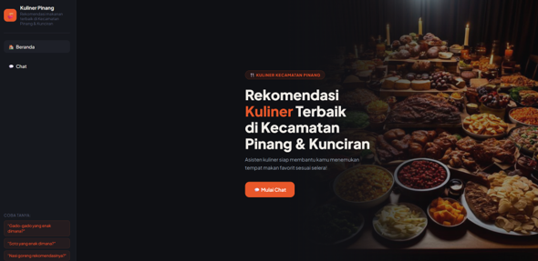
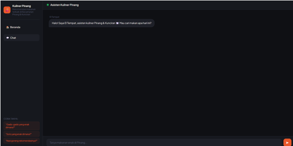
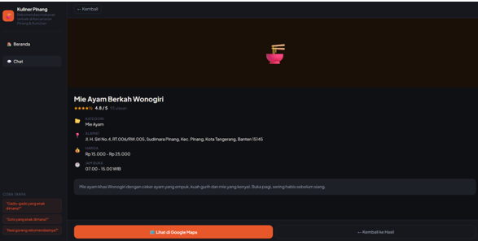
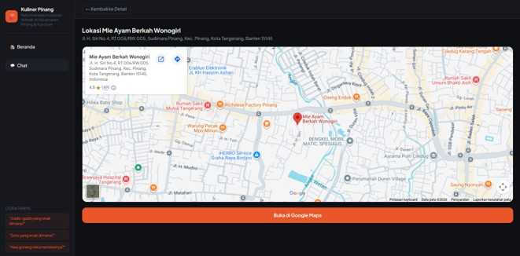

PROYEK SKRIPSI · APLIKASI BERBASIS WEB
Rekomendasi Kuliner Terbaik Di Kecamatan Pinang Kota Tangerang
Website ini dibangun untuk sebuah proyek skripsi yang bertujuan memberikan rekomendasi kuliner terbaik di Kecamatan Pinang, Kota Tangerang.
Lihat detail →PROYEK SKRIPSI · APLIKASI BERBASIS WEB
Rekomendasi Kuliner Terbaik Di Kecamatan Pinang Kota Tangerang



Deskripsi
Website ini dibangun untuk sebuah proyek skripsi yang bertujuan memberikan rekomendasi kuliner terbaik di Kecamatan Pinang, Kota Tangerang. Dengan menggunakan metode Content Based Filtering yang digunakan untuk memberikan sebuah rekomendasi berdasarkan data tempat makan yang sudah dikumpulkan dan untuk memberikan sebuah rekomendasi yang menggunakan Artificial Intelligence dibantu dengan menggunakan metode Cosine Similarity yang fungsinya untuk menghitung tingkat kemiripan antara data tempat makanannya.
Fitur Utama
- Dapat memberikan rekomendasi kuliner terbaik sesuai dengan user inginkan
- Terdapat fitur detail informasi yang menyajikan informasi-informasi terkait kuliner seperti rating, kisaran harga, dan jam operasional
- Terdapat halaman lokasi yang menampilkan posisi letak tempat kuliner yang ingin dituju serta langsung terintegrasi ke dalam aplikasi Google Maps